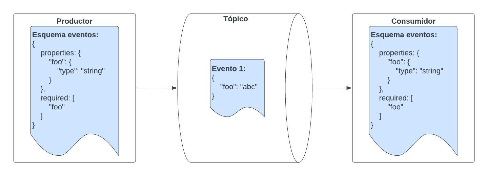

En mi actual trabajo estamos construyendo herramientas relacionadas con modelado de interfaces de servicios y eventos. Para ser más precisos, mi equipo mantiene un repositorio donde varios equipos gestionan las versiones de las especificaciones (specs) de sus servicios y eventos, todo esto en el contexto de una plataforma orientada a servicios. Ese repositorio incluye validaciones de compatibilidad: si un cambio en un servicio o evento tiene el riesgo de romper algo, nuestra lógica lo detecta y lo advierte.
¿Qué significa que un cambio rompa algo? Veámoslo en el contexto de un servidor
y un cliente. Un ejemplo de una ruptura, breaking change en inglés, es cambiar
el tipo de un campo, digamos, de string a int. Si el servidor espera un
int para una solicitud y el cliente le envía un string, entonces el servidor va
a rechazar la solicitud:
sequenceDiagram participant Cliente as Cliente participant Servidor as Servidor Cliente->>Servidor: Solicitud (Campo: string) Servidor-->>Cliente: OK 200 Note over Servidor: Cambio de tipo de campo a int Cliente->>Servidor: Solicitud (Campo: string) Note over Servidor: Error procesando solicitud: formato inesperado Servidor--xCliente: Bad Request 400 (Campo esperado: int) Note over Cliente: Respuesta errónea: solicitud rechazada
Lo mismo pasaría si el campo estuviera en la respuesta:
el cliente va a esperar un string y recibe un int:
sequenceDiagram participant Cliente as Cliente participant Servidor as Servidor Cliente->>Servidor: Solicitud Servidor-->>Cliente: OK 200 (Campo: string) Note over Servidor: Cambio de tipo de campo a int Cliente->>Servidor: Solicitud Servidor-->>Cliente: OK 200 (Campo: int) Note over Cliente: Error de procesamiento: esperaba string
Los cambios abruptos de tipos son ejemplos de rupturas que suceden en cualquier dirección: sea en la solicitud o en la respuesta, sea que se despliegue el servidor o el cliente primero. Pero como veremos, existe otro tipo de rupturas que se dan en una sola dirección, y que se pueden desplegar de forma segura si primero se despliega el cambio en un lado y luego en el otro.
Compatibilidad hacia atrás y hacia adelante
Por ejemplo, si el servidor empieza a requerir un nuevo campo obligatorio entonces cualquier solicitud que el cliente haga sin ese campo va a fallar. Este tipo de cambio es incompatible hacia atrás, porque el cliente tiene un esquema antiguo que es incompatible con el nuevo esquema que el servidor usa para validar las solicitudes. Este es el tipo de ruptura con el que seguramente estamos más familiarizados. En el caso anterior, si se despliega el cambio en el cliente primero, entonces no habrá ruptura.
Hay otra forma de ruptura menos común. Si el cambio consiste en agregar un nuevo campo obligatorio a la respuesta (por obligatorio me refiero a que el servidor garantiza que el campo va a estar presente), entonces dependiendo del esquema que use el cliente, este puede ser compatible o no. Si el cliente usa, por adelantado, el nuevo esquema mientras el servidor emite respuestas con el viejo esquema, entonces el cliente se va a romper tratando de leer las respuestas del servidor. Esta es una ruptura hacia adelante. Como podrán intuir este tipo de incompatibilidad es menos común, porque no es tan usual que sean los clientes los que deseen usar una versión del esquema más nueva. Usualmente son los servidores los que quieren empezar a emitir respuestas con un esquema más nuevo.
Es importante recordar que, en cualquier caso, una ruptura afecta a los clientes: puede suceder en forma de un bad request o en forma de un error de procesamiento de una respuesta.
La noción de compatibilidad hacia adelante y hacia atrás es un poco confusa y difícil de interiorizar, al menos para mí. La forma en la que yo lo pienso es preguntarme quién tiene el esquema nuevo y quién el esquema viejo. También es importante notar que un cambio puede ser compatible hacia adelante pero no hacia atrás, y vice versa: básicamente que un cambio sea compatible en una dirección no nos dice nada sobre la compatibilidad en la otra dirección.
Nota aparte (Click!)
Es difícil traducir backwards compatible y forward compatible al español. Se me ocurre hablar de compatibilidad hacia atrás y hacia adelante por que así se transmite la idea de que es con respecto a un esquema nuevo o viejo.
Hay varias complejidades en las compatibilidades para clientes/servidores que no he mencionado. Por ejemplo, dependiendo de si el cambio es en la solicitud o en la respuestas, la compatibilidad puede ser hacia adelante o hacia atrás, desde el punto de vista de quién produce un valor y quién lo lee. Si esto suena confuso, es por que lo es. Este post abordará la compatibilidad en un contexto distinto: el de arquitecturas orientadas a eventos. En este contexto, hablar de compatibilidad es un poco más simple.
Compatibilidad en arquitecturas orientadas a eventos
Primero, algunas definiciones. En una arquitectura orientada a eventos, diferentes servicios o dominios emiten eventos hacia canales o tópicos. Entidades interesadas en esos eventos se suscriben a esos canales. Los procesos emisores son llamados productores y los procesos que se suscriben a los canales son llamados consumidores. En medio de estos dos procesos hay un broker que es el que hace la transmisión de los eventos, desde un productor hacia sus consumidores. Ejemplos de brokers son Kafka, RabbitMQ, AWS SNS, AWS Kinesis, etc. Para un buen resúmen de estos conceptos pueden ver esta documentación de AsyncAPI.
Vamos a hacer una suposición, que es cierta en varios brokers: para el broker un evento es un blob de datos. El broker no sabe nada sobre el contenido del evento, si debe adherirse a un esquema, si es un JSON, si es un XML, etc. Esto quiere decir, que por ejemplo, si mi servicio utiliza un cliente de AWS Kinesis y emite un evento que no se adhiere al esquema acordado para ese canal, AWS Kinesis aún aceptará y transmitirá ese evento. El evento va a ser transmitido al consumidor y este va a tener una ruptura al intentar leer el evento.
Otra suposición es que no queremos que los consumidores tengan que procesar
multiples versiones de un evento. Podríamos hacer que los consumidores inspeccionen
un campo version en el evento y lo procesen según esa versión. Si
no hay un “match” entre la versión del evento y la versión que el consumidor espera,
entonces el consumidor puede rechazar el evento. Esta es una opción, pero puede
ser un dolor de cabeza para los consumidores. Además, la mayoría del tiempo los
consumidores solo van a estar procesando un mismo tipo o versión de un mensaje.
Lo que queremos es introducir cambios sin mucha coordinación,
de forma fluida. Si hay posibilidad de una ruptura, eso es algo que quisiéramos
saber.
El sistema funciona de forma normal cuando el esquema que tienen los productores es el mismo que el esquema que tienen los consumidores:

Pensemos en ejemplos de cambios en el esquema de los eventos que pueden producir rupturas:
Por ejemplo: remover un campo que solía ser obligatorio. En este caso, la ruptura es hacia atrás, por que el consumidor tiene un esquema viejo que no sirve con nuevos eventos.
Para desplegar este cambio, una opción es implementarlo primero en los consumidores: esto significa dejar de usar el campo que se va a remover. Luego, el productor se puede actualizar de forma segura.
Ahora, otro ejemplo de un cambio sería agregar un nuevo campo obligatorio. En este caso, la ruptura es hacia adelante, por qué en caso de que el consumidor utilice el nuevo esquema, los eventos viejos no van a tener el campo nuevo.
Desplegar este cambio de forma segura es el contrario del anterior: primero se despliega el cambio en el productor, y luego en los consumidores. Pero hay un detalle adicional. Los pasos son:
- Desplegar el cambio en el productor. En este punto, el tópico va a contener eventos con el nuevo esquema y eventos con el viejo esquema, es decir eventos con y sin el nuevo campo.
- Esperar que los consumidores hayan procesado todos los eventos viejos (sin el nuevo campo).
- Desplegar el cambio en los consumidores. En este punto, los consumidores podrán procesar todos los eventos en el tópico.
¿Qué otros tipos de cambios existen y cuáles de ellos son compatibles o no?
Listemos algunos:
- Hacer opcional un campo que antes era obligatorio
- Remover una variante de una enumeración: por ejemplo, si el campo
statuspuede serCREATED,PROCESSINGoCOMPLETED, removerPROCESSING. Es importante anotar que sin importar que la representación subyacente para enumeraciones seaStrings, queremos asegurarnos que los valores que vemos corresponden a un esquema. - Contrario al anterior: agregar una variante a una enumeración.
- Agregar un campo opcional.
- Agregar un nuevo tipo de evento a un tópico.
Para el lector: ¿cuáles de estos cambios son compatibles? ¿cuáles son rupturas hacia adelante o hacia atrás?
Veámoslo acá:
| Cambio | Compatible hacia atrás | Compatible hacia adelante |
|---|---|---|
| Hacer opcional un campo que antes era obligatorio | No. El consumidor puede recibir un evento sin el campo. | Si. El consumidor va a seguir recibiendo el campo, aunque piense que es opcional. |
| Remover una variante de una enumeración | Si. El consumidor va a ser capaz de procesar los valores que conoce. | No. El consumidor puede recibir un evento con el valor de la enumeración que fue removido. |
| Agregar una variante a una enumeración | No. El consumidor puede recibir un evento con el nuevo valor de la enumeración que no reconoce. | Si. El consumidor va a seguir siendo capaz de identificar las mismas variantes, y va a estar listo para cuando el productor emita eventos con ese nuevo valor. |
| Agregar un campo opcional | Si. El consumidor no leerá ese campo opcional. | Si. El consumidor sabrá que el campo es opcional, y no recibirá un valor hasta que el productor cambie. |
| Agregar un nuevo tipo de evento a un tópico | No. El consumidor puede recibir una instancia del nuevo evento y no saber como procesarlo. | Si. El consumidor va a seguir siendo capaz de procesar los eventos que conoce, y va a estar listo para procesar el nuevo evento cuando el productor lo emita. |
Conclusión
Pensar en compatibilidad es una noción que se necesita tener en cuenta en sistemas que evolucionan y que se encuentran en producción. Desarrollar nociones de qué cambios son seguros y cuales no es importante para poder desplegar cambios de forma segura. Es importante distinguir entre compatibilidad hacia atrás y hacia adelante, por que esto indica como podemos desplegar de forma segura sin generar una disrrupción. En un post futuro hablaré sobre el mismo problema en el contexto de clientes y servidores.